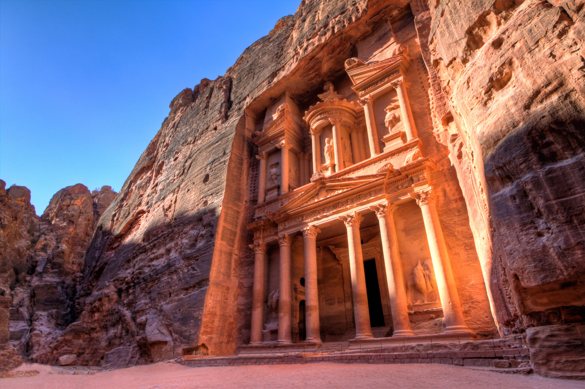

Carved directly into vibrant red sandstone cliffs over 2,000 years ago, this Nabataean capital remains one of the world's most famous archaeological sites, hidden deep within a narrow desert canyon.